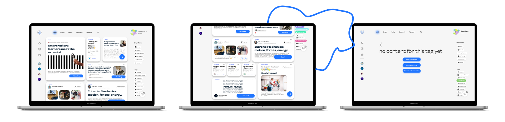
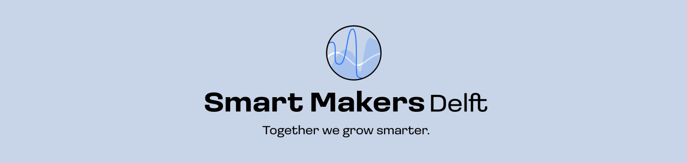
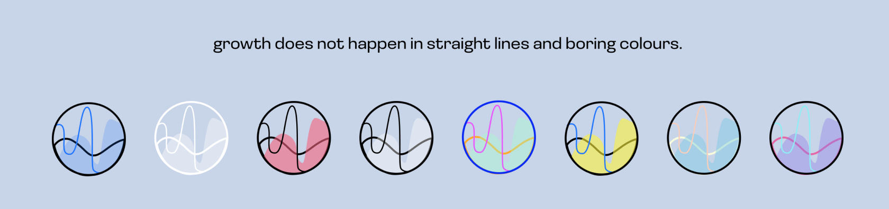
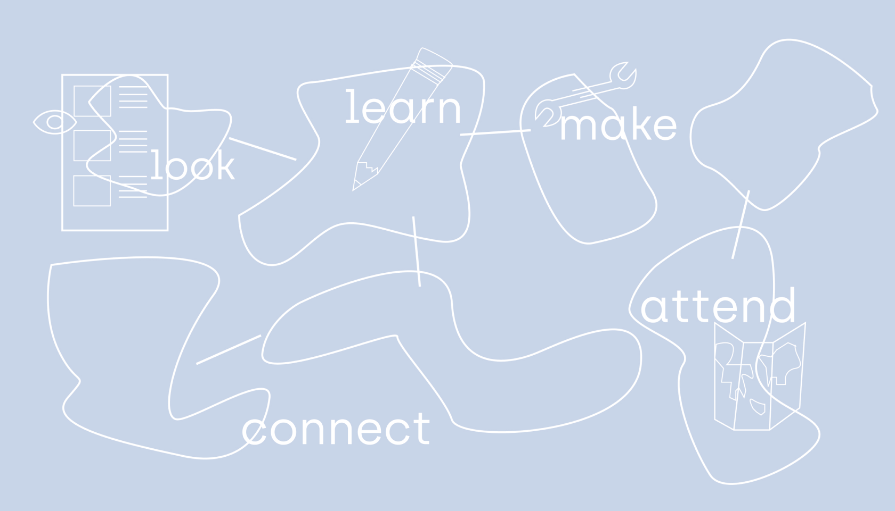

In the third year of UXD, we worked on a wonderful project with Gemeente Delft as a client. The brief stated
that they needed both an online and offline place for their group of SmartMakers to become an unbreakable
community.
My group and I ended up designing a whole platform, one that sprouted from the idea of showing personal
development and being proud of who the user is and what they have achieved. Our main figure was a blob entity, a
non-human anthropomorphic figure that represented the skills and growth its users achieve. This would be the
avatar that accompanies the user all throughout their journey on our platform. Besides this, we created spaces
where users would connect, look, make and attend, based on their needs and what we figured would be the best way
to incorporate them into one design.
My role was to take care of some creative parts of the project, I did some visual designs and created the
tagline and, at certain point, I took on the role of a creative session organiser. As a fun bonus, I offered to
direct and narrate the script for the Pitch video. However, we were all very much involved as a team in creative
decisions and were listening carefully to what each team member had to say.
There was a moment where I realized we left the logo as a sketch, so I came up with a design, brought it up with
the team and then we discussed it together in a call. This was not a singular case in our team, though, because
every time something was left unfinished, someone would bring it up and we would fix it together, or someone
would take care of it.


